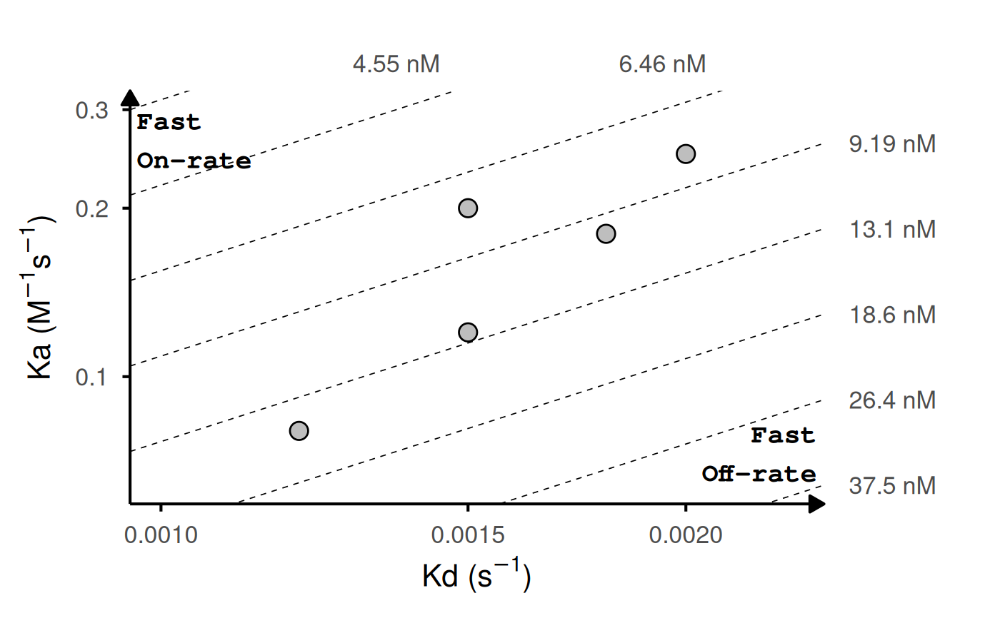
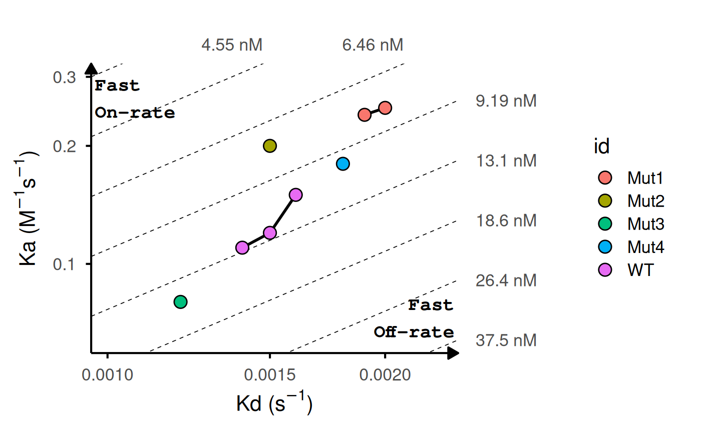
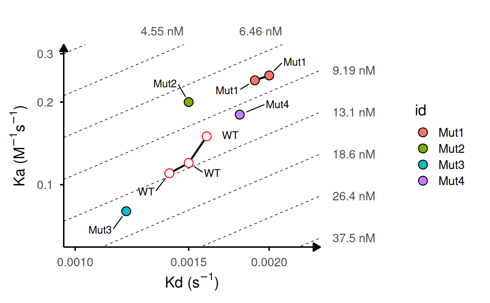
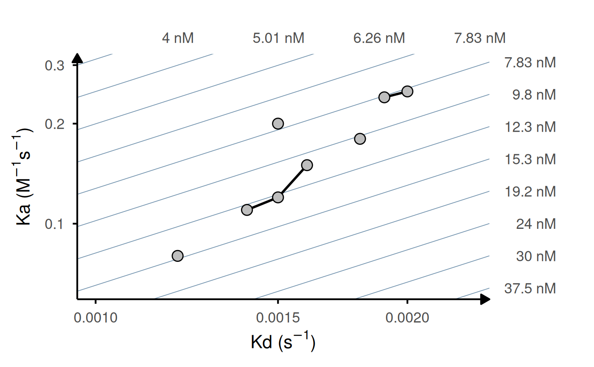
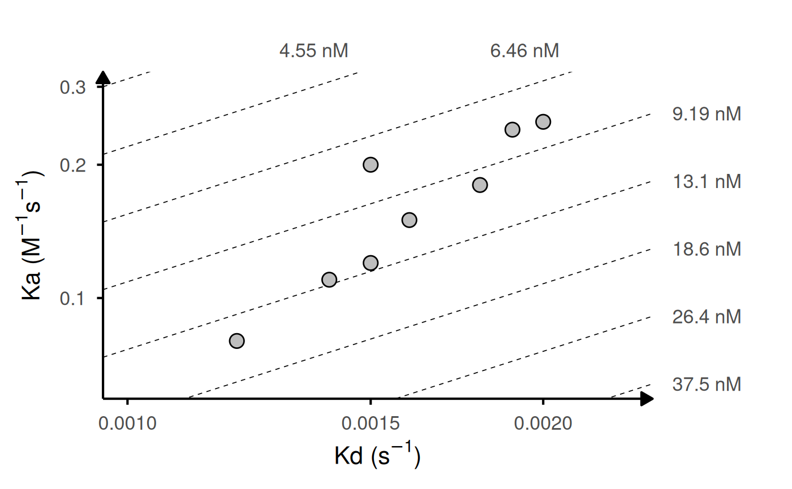
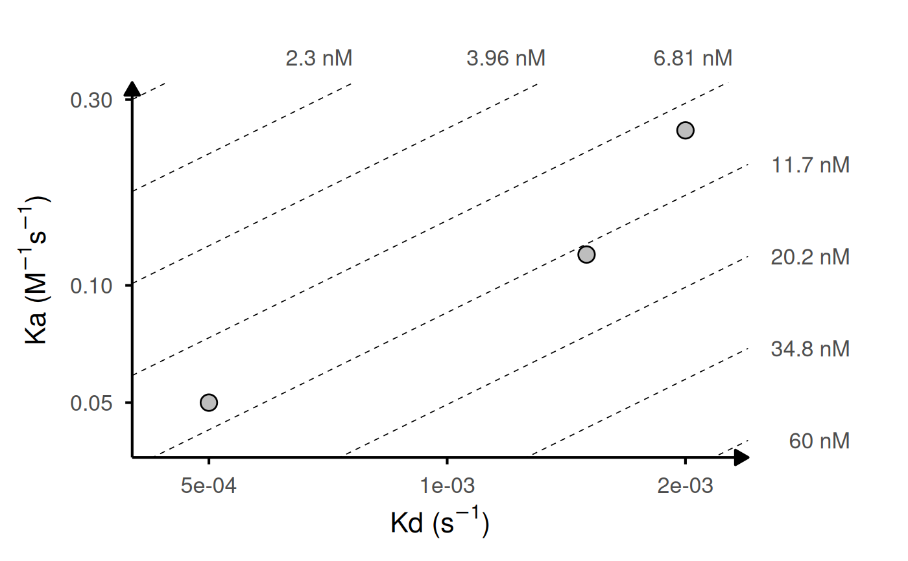

Generates a log-log plot of association rate (ka) vs dissociation rate (kd) with iso-affinity (KD) lines. Useful for visualizing kinetic binding data from surface plasmon resonance (SPR), biolayer interferometry (BLI), or other biophysical assays.
Usage
gg_kdmap(
data,
id = "id",
ka = "ka",
kd = "kd",
labels = NULL,
size = 4,
shape = 21,
fill = "grey",
color = "black",
ref_id = NULL,
ref_shape = 21,
ref_color = "black",
ref_fill = "white",
ref_size = size,
rep_lines = TRUE,
iso_color = "black",
iso_alpha = 1,
iso_width = 0.3,
iso_type = "dashed",
iso_n = 8,
text_padding = 1,
title = NULL,
show_anno = FALSE
)Arguments
- data
A data frame containing kinetic data. Must include columns specified by the
id,ka, andkdparameters.- id
Character string specifying the column name in
datathat contains identifiers for each measurement. Used to group replicates and identify reference points. Default is "id".- ka
Character string specifying the column name in
datathat contains association rate constants. Values must be in M^-1s^-1 units. Default is "ka".- kd
Character string specifying the column name in
datathat contains dissociation rate constants. Values must be in s^-1 units. Default is "kd".- labels
Character string specifying a column name in
datacontaining text labels to display next to points. If NULL (default), no labels are shown.- size
Numeric value for point size, or character string specifying a column name in
datato map to point size. Default is 3.- shape
Numeric value (0-25) for point shape, or character string specifying a column name in
datato map to point shape. Default is 21 (filled circle).- fill
Character string specifying a color for point fill, or a column name in
datato map to fill aesthetic. Default is "grey".- color
Character string specifying a color for point border, or a column name in
datato map to color aesthetic. Default is "black".- ref_id
Character string specifying the ID of a reference point to highlight with different aesthetics. Must match a value in the column specified by
id. Default is NULL (no reference point).- ref_shape
Numeric value (0-25) specifying the shape for the reference point. Default is 21.
- ref_color
Character string specifying the border color for the reference point. Default is "black".
- ref_fill
Character string specifying the fill color for the reference point. Default is "white".
- ref_size
Numeric value specifying the size for the reference point. Default is the value of the
sizeparameter.- rep_lines
Logical indicating whether to connect replicate points (points with the same ID) with lines. Default is TRUE.
- iso_color
Character string specifying the color of iso-KD lines. Default is "black".
- iso_alpha
Numeric value (0-1) specifying the transparency of iso-KD lines. Default is 1.
- iso_width
Numeric value specifying the line width of iso-KD lines. Default is 0.3.
- iso_type
Character string specifying the line type of iso-KD lines. Must be one of "solid", "dashed", "dotted", "dotdash", "longdash", or "twodash". Default is "dashed".
- iso_n
Numeric value specifying the number of iso-KD lines to draw, spaced evenly in log10(KD) across the current plot range. Default is 8.
- text_padding
Numeric value specifying the padding around text labels when
labelsis used. Passed toggrepel::geom_text_repel. Default is 1.- title
Character string for the plot title. If NULL (default), no title is displayed.
- show_anno
Logical indicating whether to show corner annotations indicating fast on-rate (top left) and fast off-rate (bottom right) regions. Default is FALSE.
Value
A ggplot2 object showing the kinetic rate map. The plot displays:
X-axis: dissociation rate (kd) in s^-1 on log scale
Y-axis: association rate (ka) in M^-1s^-1 on log scale
Points representing individual kinetic measurements
Diagonal iso-affinity lines representing constant KD values
Secondary axes (top and right) showing KD values in appropriate units (pM, nM, µM, or mM)
Optional connecting lines between replicates (same ID)
Optional highlighted reference point
Optional text labels for points
Optional corner annotations indicating rate directions
KD values are automatically calculated from ka and kd rates and displayed in the most appropriate units based on the data range.
Details
The function creates a log-log plot with:
X-axis: dissociation rate (kd, in s^-1)
Y-axis: association rate (ka, in M^-1s^-1)
Diagonal lines representing iso-affinity contours (constant KD values)
Required units:
ka: M^-1s^-1 (association rate constant)
kd: s^-1 (dissociation rate constant)
The function calculates equilibrium dissociation constant as KD = kd/ka and automatically converts to the most appropriate units (pM, nM, µM, or mM) for display on secondary axes.
Iso-KD lines are generated so that there are always iso_n lines spanning
the visible plot window. They are equally spaced in log10(KD) across the
KD range implied by the current x/y limits. The top (x) and right (y)
secondary axes are labeled with the KD values corresponding to these lines.
See also
geom_point for point customization,
geom_text_repel for label placement.
Examples
# Basic example: 5 variants with single measurements
kinetic_data <- data.frame(
id = c("WT", "Mut1", "Mut2", "Mut3", "Mut4"),
ka = c(1.2e5, 2.5e5, 2e5, 8.0e4, 1.8e5),
kd = c(1.5e-3, 2.0e-3, 1.5e-3, 1.2e-3, 1.8e-3)
)
gg_kdmap(data = kinetic_data, show_anno = TRUE)
#> `geom_line()`: Each group consists of only one observation.
#> ℹ Do you need to adjust the group aesthetic?

# With replicates: lines connect points with same ID
kinetic_rep <- data.frame(
id = c("WT", "WT", "WT", "Mut1", "Mut1", "Mut2", "Mut3", "Mut4"),
ka = c(1.2e5, 1.5e5, 1.1e5, 2.5e5, 2.4e5, 2e5, 8.0e4, 1.8e5),
kd = c(1.5e-3, 1.6e-3, 1.4e-3, 2.0e-3, 1.9e-3, 1.5e-3, 1.2e-3, 1.8e-3)
)
gg_kdmap(data = kinetic_rep, show_anno = TRUE, fill = "id")

# Add labels and highlight reference
gg_kdmap(
data = kinetic_rep,
labels = "id",
ref_id = "WT",
ref_fill = "white",
ref_color = "red",
fill = "id"
)

# Customize iso-KD lines
gg_kdmap(
data = kinetic_rep,
iso_n = 12,
iso_color = "#7192ad",
iso_type = "solid"
)

# Turn off replicate lines
gg_kdmap(data = kinetic_rep, rep_lines = FALSE)

# Custom column names
custom_data <- data.frame(
sample = c("WT", "Mut1", "Mut2"),
kon = c(1.2e5, 2.5e5, 5.0e4),
koff = c(1.5e-3, 2.0e-3, 5.0e-4)
)
gg_kdmap(data = custom_data, id = "sample", ka = "kon", kd = "koff")
#> `geom_line()`: Each group consists of only one observation.
#> ℹ Do you need to adjust the group aesthetic?
